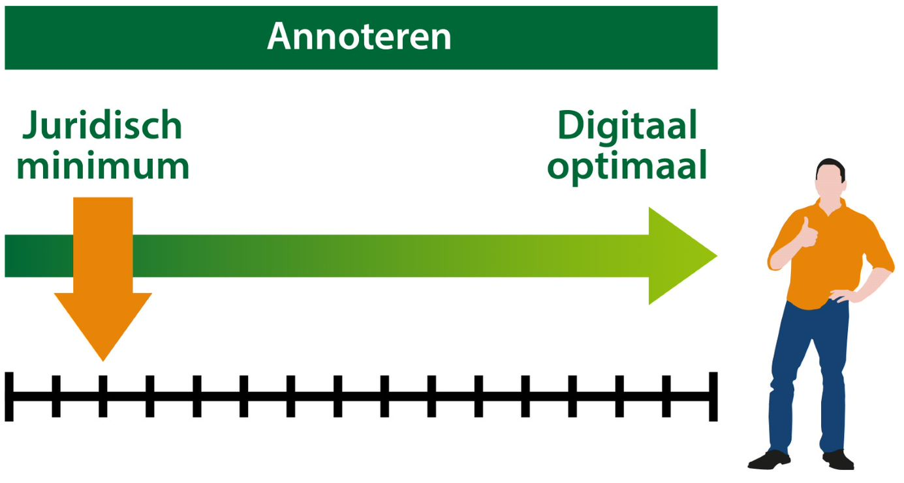
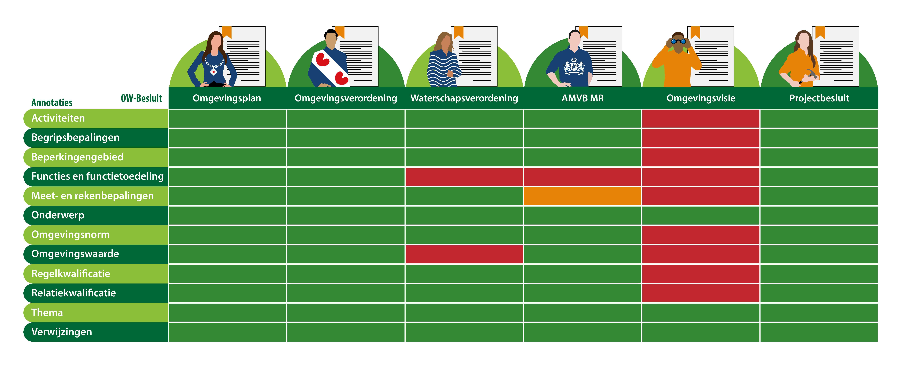

Het bevoegd gezag heeft de mogelijkheid om diverse soorten regels op te stellen
over activiteiten die gevolgen (kunnen) hebben voor de fysieke leefomgeving. De
Omgevingswet stelt dit overigens niet verplicht. De Omgevingswet gaat uit van
het principe ‘Decentraal, tenzij'. Tevens is bij het opstellen van regels over
activiteiten de decentrale beleidsvrijheid ook het uitgangspunt. Het wel of niet
stellen van regels is in beginsel een keuze van de decentrale overheden. Dit
betekent dat de taken en de bevoegdheden in principe worden uitgevoerd door
gemeenten en waterschappen.
De regels over activiteiten die gevolgen (kunnen) hebben voor de fysieke
leefomgeving, kunnen in verschillende OW-besluiten staan, namelijk in het
omgevingsplan, de waterschapsverordening, de omgevingsverordening en in algemene
maatregelen van bestuur van het Rijk. Het gaat daarbij bijvoorbeeld om regels
over aanlegactiviteiten, bouwactiviteiten of sloopactiviteiten. Of regels over
het uitvoeren van bedrijfsmatige of beheersmatige activiteiten.
Ook bij het stellen van regels over activiteiten is decentrale beleidsvrijheid
het uitgangspunt. Het wel of niet stellen van regels is in beginsel een keuze
van decentrale overheden. In de praktijkrichtlijnen van de specifieke
OW-besluiten is in het onderdeel ‘Inhoud van het OW-besluit’ aangegeven waar
regels over gesteld kunnen worden.
Opbouw van de regels
Om de regels in het Digitale Stelsel Omgevingswet te laten landen bestaan deze
uit verschillende onderdelen:
Dit is middels de STOP/TP en TPOD van toepassing op alle verschillende
OW-besluiten.
Het IMOP-tekstmodel benoemt tekstobjecten en beschrijft de structuur waarin die
tekstobjecten toegepast kunnen worden. Het tekstmodel geldt voor alle officiële
overheidspublicaties. IMOP onderscheidt twee soorten tekststructuren:
In onderstaande afbeelding is weergegeven dat een regeling uit regelteksten
bestaat.
Links geeft weer hoe een regelingstructuur met een vaste indeling van
structuurelementen, zoals een artikel of een lid, eruit ziet. Deze vaste
indeling is voor alle teksten met een regelingstructuur ook verplicht.
Rechts staat een vrije tekststructuur die opgebouwd wordt met divisies, die
onder elkaar kunnen voorkomen. Het bevoegd gezag kan zelf beslissen of er een
heel artikel of maar één lid gekoppeld wordt aan een werkingsgebied of wellicht
de gehele regeling.
Per OW-besluit en per besluitonderdeel van het OW-besluit is in de TPOD
vastgelegd welke tekststructuur gebruikt kan of moet worden. De OW-besluiten
zonder regels hebben een vrijer karakter en kennen geen artikelsgewijze
indeling. Voor deze besluiten geldt dan ook de VrijeTekstStructuur.
De OW-besluiten zonder regels vragen expliciet om andere eigenschappen voor het
realiseren van raadpleegbaarheid. Een goed voorbeeld hiervan is het meegeven van
extra weergavekenmerken op basis van type werkingsgebieden. Verder is er door
middel van de divisies een eigen structuur voor hiërarchie en samenhang tussen
werkingsgebieden mogelijk.
Het facultatieve derde deel van het OW-besluit is ingedeeld in een vrije
tekststructuur. Met andere woorden, er wordt gebruik gemaakt van divisies. Deze
divisies kunnen oneindig onder elkaar gehangen worden. Het is volledig vrij aan
het bevoegd gezag om de informatie uit deze delen te structureren.
Aangezien het derde besluitonderdeel artikelsgewijze toelichting is, is het
logisch om met behulp van de vrije tekststructuur een vergelijkbare structuur te
maken als die in het tweede besluitonderdeel is gemaakt. Dat kan met behulp van
verwijzingen.
In onderstaand figuur is een voorbeeld uitgewerkt hoe dat er in mens- en machine
leesbare tekst uitziet, zie IntRef in de XML in het rode kader. In het geval van
de koppeling naar de artikelsgewijze toelichting zal de tekst er anders uitzien,
maar het principe is hetzelfde.
3.4 Opbouw tekststructuur projectbesluit
Voor het projectbesluit gelden de structuren per besluitonderdeel zoals in
onderstaande afbeelding.
 Tekststructuur omgevingsplan
Tekststructuur omgevingsplan
Het omgevingsplan zelf, dus het tweede deel van ieder besluit tot vaststelling
c.q. wijziging van het omgevingsplan, én de geconsolideerde versie van het
omgevingsplan bestaan uit regels en kennen derhalve een RegelingStructuur,
oftewel een artikelsgewijze opzet.
Bij het omgevingsplan horen ook een motivering (het eerste deel van het
vaststellings- of wijzigingsbesluit) en (facultatief) een artikelsgewijze
toelichting (het derde deel van het vaststellings- of wijzigingsbesluit). Deze
onderdelen hebben een VrijeTekstStructuur. Dit geldt alleen voor de
geconsolideerde versie. De beschrijving van de tekstelementen en de regels
daarvoor gelden op dit moment alleen voor de geconsolideerde versie van het
omgevingsplan. Er is nog te weinig inzicht in de manier waarop
wijzigingsbesluiten moeten worden opgesteld om uitspraken over de daarin te
gebruiken tekstelementen te kunnen doen.
Om de gemeente de mogelijkheid te bieden het omgevingsplan naar eigen inzicht in
te delen wordt slechts een zeer beperkte vorm van standaardinhoudsopgave
voorgeschreven. De enige verplichting is dat ieder omgevingsplan een eerste
hoofdstuk heeft met het opschrift 'Algemene regels'. Uitgangspunt is dat in
hoofdstuk 1 'Algemene regels' alleen algemene regels worden opgenomen, waarvan
het werkingsgebied het hele werkingsgebied van het omgevingsplan is.
Als houvast is er qua indeling van het omgevingsplan een casco opgesteld door de
VNG. Hierin staan tekststructuren en inhoudelijke indelingen. Het is overigens
een facultatieve richtlijn die niet verplicht is. Het document wordt nog
beschikbaar gesteld via
<https: wetgevingswerken.nl="" projecten="" omgevingsplan-structuur="">
Tekststructuur omgevingsvisie
Om de provincie de mogelijkheid te bieden de omgevingsverordening naar eigen
inzicht in te delen wordt er slechts een zeer beperkte vorm van
standaardinhoudsopgave voorgeschreven.
De enige verplichting is dat iedere omgevingsverordening een eerste hoofdstuk
heeft met het opschrift 'Algemene bepalingen'.
Uitgangspunt is dat in hoofdstuk 1 'Algemene bepalingen' alleen algemene
bepalingen worden opgenomen waarvan het werkingsgebied het hele werkingsgebied
van de omgevingsverordening is.
Doel van dit uitgangspunt is tweeledig. Enerzijds wordt het gehanteerd om ervoor
te zorgen dat een gebruiker alle regels die op een locatie gelden gepresenteerd
krijgt. Anderzijds voorkomt dit uitgangspunt dat een gebruiker die de regels die
voor een bepaalde locatie gelden wil raadplegen ook allerlei regels te zien
krijgt die daar niet van toepassing zijn, alleen omdat ze als algemene bepaling
zijn geformuleerd zonder er een specifiek werkingsgebied aan te koppelen. In
hoofdstuk 1 'Algemene bepalingen' komt verplicht een artikel Begripsbepalingen
en facultatief een artikel Meet- en rekenbepalingen voor.
Het Interprovinciaal Overleg (IPO) heeft een handreiking omgevingsverordening
2.0 opgesteld. Deze geldt als handvat voor de provincies. Hierin wordt een keur
van wettelijke verplichtingen en mogelijkheden tot opbouw in beeld gebracht en
toegelicht. Waar mogelijk zijn ook voorbeelden gegeven.
https://ipo.nl/index.php/download_file/force/4918/172/
Tekststructuur waterschapsverordening
De waterschapsverordening zelf, dus het tweede deel van ieder besluit tot
vaststelling c.q. wijziging van de waterschapsverordening, én de geconsolideerde
versie van de waterschapsverordening bestaan uit regels en kennen derhalve een
RegelingStructuur, oftewel een artikelsgewijze opzet. Bij de
waterschapsverordening horen ook een motivering (het eerste deel van het
vaststellings- of wijzigingsbesluit) en (facultatief) een artikelsgewijze
toelichting (het derde deel van het vaststellings- of wijzigingsbesluit). Deze
onderdelen hebben een VrijeTekstStructuur.
De waterschappen gaan nu aan de slag met een handreiking waterschapsverordening.
Tekststructuur PB
Het projectbesluit zelf bestaat uit deel 1 welke een vrije tekststructuur kent.
Mogelijk nog aangevuld met de nodige bijlagen.
Echter als er sprake is van wijziging van de regels in het omgevingsplan na het
nemen van een besluit, wordt deel 2 toegevoegd in dezelfde structuur als de
regels in het omgevingsplan en kennen derhalve een RegelingStructuur, oftewel
een artikelsgewijze opzet.
Om de bestuursorganen de mogelijkheid te bieden het projectbesluit naar eigen
inzicht in te delen schrijft dit toepassingsprofiel slechts een zeer beperkte
vorm van standaardinhoudsopgave voor. De enige verplichting is dat ieder
projectbesluit een eerste hoofdstuk heeft met het opschrift 'Algemene regels'.
Uitgangspunt is dat in hoofdstuk 1 'Algemene regels' alleen algemene regels
worden opgenomen waarvan het werkingsgebied het hele werkingsgebied van het
projectbesluit is. Het doel van dit uitgangspunt is tweeledig. Enerzijds wordt
het gehanteerd om ervoor te zorgen dat een gebruiker alle regels die op een
locatie gelden gepresenteerd krijgt. Anderzijds voorkomt dit uitgangspunt dat
een gebruiker die de regels die voor een bepaalde locatie gelden wil raadplegen
ook allerlei regels te zien krijgt die daar niet van toepassing zijn, alleen
omdat ze als algemene regel zijn geformuleerd zonder er een specifiek
werkingsgebied aan te koppelen. In hoofdstuk 1 'Algemene regels' komen verplicht
een artikel Begrippen en een artikel Meet- en rekenbepalingen voor.
Tekststructuur AMvB & MR, omgevingsvisie
De AMvB en MR en de omgevingsvisie kennen geen voorgeschreven inhoudsopgave. Zij
hebben hierbij ook een vrije tekststructuur.
3.4.1 Kop en structuur van regeltekst
Zoals eerder aangegeven, bestaat een regeling uit regelteksten. Een regeltekst
bestaat ook weer uit juridische regels, maar kan ook uit weer uit
structuurelementen opgebouwd zijn. De regeltekst heeft altijd een kop. Een kop
bestaat uit een label (de naam van het type tekstelement, zoals artikel of
divisie) een nummer en een opschrift. Met uitzondering van lid moeten alle
tekstelementen worden voorzien van een opschrift; over het algemeen kan het
bevoegd gezag het Opschrift zelf kiezen.
In Artikelen en Leden kunnen Lijsten voorkomen. Er gelden regels voor het
maximum aantal niveaus in Lijsten en de nummering van Lijsten. In onderstaand
figuur is een voorbeeld opgenomen van een artikel met daarin de mens- en
machineleesbare weergave. Andere voorbeelden van koppen zijn een artikel of lid
in het geval van een regelingstructuur en een divisie in het geval van een vrije
tekststructuur.
Opbouw van een kop
Structuur regeling, regeltekst, juridische regels en Regelingsstructuur of
VrijeTekstStructuur
3.4.2 Locatie
Een Locatie is een met coördinaten afgebakend gebied of object. Locatie bevat
één of meer geometrieën. Een Locatie kan aan een inhoudelijke annotatie
gekoppeld worden en kan aan de tekst gekoppeld worden. Belangrijk is te
vermelden dat het object Locatie een STOP-gegeven is. Vanwege de centrale rol
die Locatie speelt in de toepassingsprofielen in het domein van de Omgevingswet,
wordt Locatie ook in dit TPOD beschreven. Een gedetailleerdere toelichting van
Locatie is te vinden in de STOP-documentatie.
3.4.3 Locatie en inhoudelijke annotatie
Een Locatie duidt de geometrische afbakening aan van enkele inhoudelijke
annotaties, zoals Activiteit, Functie, Onderwerp, Omgevingswaarde en
Omgevingsnorm (zie paragraaf 5.8 TPOD’s voor een toelichting en normering op al
deze annotaties). Daarvoor hebben deze inhoudelijke annotaties de eigenschap
Locatie. Wanneer de gewenste annotatie de eigenschap Locatie heeft, is het
verplicht deze vorm van Locatie te gebruiken. De Locatie die aan een
inhoudelijke annotatie is gekoppeld, wordt Locatie genoemd en niet
Werkingsgebied.
3.4.4 Locatie en tekst
In de gevallen waarin geen annotatie wordt toegevoegd of een annotatie wordt
gebruikt die geen eigenschap Locatie heeft, zoals Thema, wordt gebruik gemaakt
van de vorm van Locatie die aan een tekstelement of tekstfragment is gekoppeld.
In een OW-besluit heeft (de inhoud van) een tekstelement of tekstfragment een
werking voor een Locatie.
Een Locatie die aan een tekstelement of tekstfragment is gekoppeld, wordt
Werkingsgebied genoemd.
Dat geldt voor zowel OW-besluiten met regels als voor OW-besluiten zonder
regels. Dit betekent dat OW-besluiten zonder regels óók werkingsgebieden
bevatten.
In principe wordt bij ieder tekstelement expliciet een Werkingsgebied
aangegeven. Indien er geen Werkingsgebied is gekoppeld aan een tekstelement,
geldt hiervoor het volledige Werkingsgebied van het besluit tot vaststelling of
wijziging of van het hele OW-besluit.
Dit Werkingsgebied kan het grondgebied van het bevoegd gezag zijn dat het
OW-besluit heeft vastgesteld, maar dat hoeft niet. Bijvoorbeeld als een
Werkingsgebied van het besluit alleen een deel van het grondgebied van het
bevoegd gezag betreft of als een gebied de uiterste grenzen van een
projectbesluit aangeeft.
Ieder tekstelement gekoppeld aan een werkingsgebied
Eigenschappen van Locatie
Locatie bevat zoals gezegd één of meer geometrieën. Een geometrie legt een
positie vast door middel van coördinaten. Het gaat hier om de geometrische
beschrijving en niet om een geografische beschrijving in woorden. Voor geometrie
geldt een aantal functionele normen.
De tweede eigenschap van Locatie is Idealisatie. Idealisatie geeft aan hoe
nauwkeurig het bevoegd gezag Locatie heeft bedoeld en hoe Locatie derhalve
geïnterpreteerd moet worden. Een Locatie kan exact bedoeld zijn, maar ook
indicatief. Een voorbeeld van dat laatste is als een grens met een formule
berekend is; de grens houdt dan geen rekening met de situering van objecten als
woningen e.d. terwijl dat in de interpretatie wel zou moeten. Als Locatie
gekoppeld is aan een tekstelement of tekstfragment, kan bij deze koppeling
bijgehouden worden wat de idealisatie van de Locatie is. Aan ieder tekstelement
of tekstfragment dat aan een Locatie is gekoppeld kan dus een eigen idealisatie
toegekend worden. Dat betekent dat eenzelfde Locatie verschillende idealisatie
kan hebben, afhankelijk van welk tekstelement of tekstfragment wordt bevraagd.
Wanneer de Idealisatie indicatief is, kan optioneel worden aangegeven met welke
marge Locatie geïnterpreteerd moet worden. De marge geeft de afstand in meters
voor de interpretatie van de begrenzing aan.
Bij de Locatie wordt de bron bijgehouden. Bron geeft aan of een basisregistratie
is gebruikt om geometrieën uit over te nemen en zo ja welke, dan wel dat een
geometrie berekend of zelf gecreëerd is.
De noemer is een tekstuele beschrijving van de locatie die de verbinding legt
tussen de aanduiding in de tekst van een locatie en de verwijzing naar het
informatie-object in de bijlage bij de regels. Voorbeelden voor omgevingsplan
respectievelijk omgevingsverordening, waarbij de noemer in cursieve tekst is
weergegeven, zijn:
| Geometrie | De beschrijving van de positie door middel van coördinaten. |
| | Voor Geometrie gelden de volgende functionele normen: |
|-----------|------------------------------------------------------------------------------------------------------------------|
| Bron |
De bron die is gebruikt voor, dan wel de wijze van inwinning van de geometrie. Bron wordt gekozen uit een limitatieve waardelijst. |
|
|
|
|
|
| Idealisatie |
De manier waarop de begrenzing van Locatie geïnterpreteerd moet worden en door het bevoegd gezag bedoeld is. Idealisatie wordt gekozen uit een limitatieve waardelijst. |
|
|
|
|
|
| Marge |
De afstand in meters waarmee de indicatief bedoelde begrenzing van Locatie geïnterpreteerd moet worden. Marge is een optionele eigenschap die alleen kan worden gebruikt wanneer de waarde van Idealisatie indicatief is. De marge is de afstand in meters en wordt aangegeven met decimal. |
|
|
|
|
|
| Noemer |
De tekstuele beschrijving van de locatie. |
|
|
|
|
|
Eigenschappen van locatie toegelicht
Dat ziet er in de STOP dan als volgt uit:
Locatie specifiek voor AMvB en MR
Specifiek voor de AMvB en MR zijn een aantal uitgangspunten van belang voor het
toepassen van locaties. Deze worden in onderstaande alinea’s verder toegelicht.
In het TPOD wordt mogelijk gemaakt dat de benoeming van een locatie, de
aanwijzing van een locatie en de begrenzing van de locatie elk in aparte
regelingen zijn opgenomen (het mag echter ook dat deze alle in één regeling
staan). De basis hiervoor is gelegd in STOP, waarin individuele componenten van
een geo-informatieobject los zijn gemodelleerd (en dus in aparte regelingen
kunnen voorkomen) en naar elkaar verwijzen, in een volgende constructie:
Een AMvB bevat een InformatieobjectVaststelling. Deze heeft alleen een
noemer en geldt als de benoeming van een locatie die nog niet begrensd is of
nog niet begrensd hoeft te zijn.
InformatieobjectVaststelling heeft vervolgens relatie met een Locatie, waar
de daadwerkelijke begrenzing in voorkomt.
InformatieobjectVaststelling en DataCollectie mogen in verschillende
regelingen staan.
Elk voorkomen van een InformatieobjectVaststelling is een apart onderdeel
van de standaard. Hierdoor wordt het mogelijk vanuit verschillende
regelingen te verwijzen één informatieobject.
InformatieobjectObject bevat het ID van het informatieobject en wordt
gebruikt om in de juridische tekst te vermelden bij welke
InformatieobjectVaststelling, welk ID hoort. Dit mag ook in een andere
regeling staan dan waarin het informatieobject is vastgesteld en waar de
begrenzingen in zijn opgenomen.
Stapeling van Locaties
Locaties kunnen geheel of gedeeltelijk gestapeld worden. Dat geldt zowel voor
Locaties bij tekstelementen of annotaties van hetzelfde type als voor Locaties
bij tekstelementen of annotaties van verschillende typen. De navolgende figuren
laten een aantal voorbeelden van stapelingen van Locaties zien voor het
omgevingsplan.
| ./media/image1.png |
./media/image2.png |
| Gedeeltelijke stapeling van locaties van hetzelfde type: de locaties van 3 verschillende functies die gedeeltelijk op dezelfde plek liggen |
Volledige stapeling van locaties van hetzelfde type: de locaties van 3 verschillende functies die precies op dezelfde plek liggen |
| ./media/image3.png |
./media/image4.png |
| Gedeeltelijke stapeling van locaties van verschillende typen: de locaties van omgevingswaarde, functie en activiteit die gedeeltelijk op dezelfde plek liggen |
Volledige stapeling van locaties van verschillende typen: de locaties van omgevingswaarde, functie en activiteit die precies op dezelfde plek liggen |
Voorbeelden van stapeling van Locaties
De standaard stelt geen beperkingen aan de stapeling: niet in aantal en niet in
type.
3.4.5 Beschrijving werkingsgebied in woorden
Locatie legt het gebied waar een regeltekst zijn werking heeft in coördinaten
vast. Soms is het wenselijk om het gebied waar een regeltekst zijn werking heeft
niet exact te begrenzen. In die gevallen wordt het werkingsgebied in woorden
beschreven.
Een voorbeeld is het beschrijven van het gebied waar een functie gerelateerde
gebruiksactiviteit zijn werking heeft: "In het werkingsgebied van de functie
Woongebied is in ieder hoekpand de activiteit ‘het uitoefenen van detailhandel'
toegelaten." Deze regeltekst is gekoppeld aan het werkingsgebied van de functie
Woongebied. Bij een beschrijving van het gebied in woorden kan een kaartviewer
deze niet op de kaart tonen omdat zo'n gebied doorgaans niet bekend is in de
kaart. Een raadpleger ziet deze regel bij het opvragen van de geldende regels
voor zowel een hoekpand als een niet-hoekpand.
Zonder eigen interpretatie kan de raadpleger niet eenduidig vaststellen waar de
regel geldt. Wanneer een geometrisch begrensd werkingsgebied gebruikt wordt, kan
een kaartviewer het wel tonen.
Bijvoorbeeld: "De activiteit 'het uitoefenen van detailhandel' is uitsluitend
toegelaten ter plaatse van het werkingsgebied 'het uitoefenen van
detailhandel'". Voor deze aanpak is het wel nodig om iedere afzonderlijke
locatie van het werkingsgebied in te tekenen. Het werkingsgebied van de
afzonderlijk begrensde gebruiksactiviteit moet binnen het werkingsgebied van de
functie liggen, ongeacht of dat werkingsgebied door middel van een geometrie of
in woorden begrensd is.
In de onderstaande wordt dit principe aan de hand van het voorgaande voorbeeld
schematisch weergegeven: A is de kaartweergave bij de beschrijving van het
werkingsgebied van de gebruiksactiviteit in woorden; B is de kaartweergave bij
een begrenzing van het werkingsgebied van de gebruiksactiviteit door middel van
geometrieën.
Begrenzing werkingsgebied in woorden (A) en met coördinaten (B)
Elk OW-besluit heeft een werkingsgebied: minstens het volledige besluitgebied
of een deel daarvan
Volume is de maat voor een 3D geometrie. 3D is onderdeel van het STOP-TPOD
model. 3D kan daarmee gestandaardiseerd worden uitgewisseld. Zie onderstaande
figuur voor een schematische weergave.
Werkingsgebied in 3D
In de eerste fase ondersteunt DSO-LV 3D echter nog niet. Daarom is 2D in eerste
instantie de verplichte geometrie. Eenvoudige 3D volumes kunnen worden
toegevoegd, maar dan alleen als extra informatie zonder juridische betekenis,
bijvoorbeeld in een toelichtende bijlage bij het besluit. Complexe 3D volumes
worden nu nog niet ondersteund.
Cirkelbogen
Cirkelbogen (of delen daarvan) komen in de juridische wet- en regelgeving op
meerdere plekken voor. Voorbeelden zijn de brandaandachtsgebied,
gifwolkaandachtsgebied, maar ook voorbeelden waarbij bijvoorbeeld bouwen niet
toegestaan is in een gebied van X meter rondom een object (boom, monument enz).
In de praktijk formuleert de jurist vaak in gebied of/en gebied om een object en
daarmee wordt deze wiskundig/meetkundig gemodelleerd naar een omhullende met een
straal ten opzichte van de buitenzijde van een object. Wordt het object als een
punt gezien, dan ontstaat een cirkel. Wordt het object als een polygoon (qua
geometrie) weergegeven ontstaat een omhullende waarin delen van een cirkelboog
kunnen voorkomen.
Bij de implementatie in het DSO-stelsel is de verwerking van exacte cirkelbogen
bewerkelijk en complex. Om die reden wordt veelal een benadering van de
juridisch geldende kromme gebruikt door deze te modelleren als een serie
lijnstukken die allen op de cirkelboog liggen: ofwel verstroken. Naar keuze
kunnen deze onderling verbonden zijn met rechte lijnstukken van punt naar punt
(de inwendige benadering) dan wel het midden vormen van de lijnstukken die deels
inwendig en deel uitwendig ten opzichte van de cirkelboog liggen. Deze laatste
manier van verstroken van de cirkelboog heeft een zeer kleine afwijking van de
juridische geldende boog.
Voorgesteld wordt om het verstroken van cirkelbogen in de implementatie te
kiezen boven een complexe kosten intensieve meetkundig geheel juiste toepassing.
De kosten overtreffen het beoogde doel binnen het DSO stelsel. Voor juristen
geldt de wiskundige beschrijving ongeacht de presentatie daarvan.
De methode van verstroken is eerder door Geonovum in samenwerking met het
kadaster en andere organisaties in het geo-werkveld beschreven. We verwijzen dan
ook naar deze methode. Aandachtpunt is dat Geo-applicatie programmatuur de wijze
van verstroken zoals aangeduid niet altijd juist toepassen. Dit laatste kan door
het aanbieden van een validator m.b.t. deze functionaliteit mogelijk worden
ondervangen. In de BGT opbouw wordt al als zodanig gebruikt.
Om te voorkomen dat cirkelbogen te gedetailleerd verstrookt worden en er heel
veel plaatsbepalingspunten ontstaan, beschrijft deze praktijkrichtlijn een
aanbevolen tolerantiewaarde voor het verstroken van cirkelbogen. Algemeen
cirkelbogen Een koorde is het lijnstuk dat twee punten op een cirkel met elkaar
verbindt. De pijl is het lijnstuk tussen het midden van een (cirkel)boog en het
midden van de koorde op die boog. De pijl staat loodrecht in het midden op de
koorde. Verstroken en tolerantiewaarde Een cirkelboog wordt opgedeeld in rechte
lijnstukken tussen de coördinaten van de cirkelboog tot dat de pijl minder is
dan een bepaalde tolerantiewaarde.
De aanbevolen tolerantiewaarde voor het verstroken van cirkelbogen in de
geometrie van BGT/IMGeo objecten is 0.05m, ofwel 5 centimeter. Er bestaan
verschillende technische algoritmen voor het verstroken van cirkelbogen. Deze
praktijkrichtlijn laat leveranciers c.q. bronhouder de keuze welke
verstrokingsalgoritme wordt toegepast.
Een koorde is het lijnstuk dat twee punten op een cirkel met elkaar verbindt. De
pijl is het lijnstuk tussen het midden van een (cirkel)boog en het midden van de
koorde op die boog. De pijl staat loodrecht in het midden op de koorde.
Relatie tussen werkingsgebieden, functies en (gebruiks)activiteiten
Voor afhankelijkheden tussen locaties, functies en activiteiten gelden enkele
eigenschappen. Zo kunnen locaties bijvoorbeeld overlappend zijn en kunnen
functies en/ of gebruiksactiviteiten in één locatie worden toegepast. De relatie
tussen locatie, functies en activiteiten bij de toepassing van
functie-aanduidingen worden in de volgende delen toegelicht.
Toepassing van verschillende functies en/of gebruiksactiviteiten in één
gebied.
Er zijn verschillende methoden om in één gebied verschillende functies toe te
delen en/of verschillende gebruiksactiviteiten toe te staan. Voorbeelden van de
vier volgende methoden zijn uitgewerkt in de praktijkrichtlijnen:
De eerste methode is het toedelen van een samengestelde functie aan de
locatie, waarbij de samengestelde functie een heel scala aan
gebruiksactiviteiten mogelijk maakt.
De tweede methode bestaat uit het stapelen van een (of meer) enkelvoudige
functie(s) en een samengestelde functie. De samengestelde functie maakt een
heel scala aan gebruiksactiviteiten mogelijk, de enkelvoudige functie
slechts een beperkt aantal.
Bij de derde methode wordt aan een locatie een samengestelde functie
toegedeeld, waarbij één gebruiksactiviteit een eigen, kleiner,
werkingsgebied heeft; de overige gebruiksactiviteiten hebben hetzelfde
werkingsgebied als de functie.
De vierde methode bestaat uit het op elkaar stapelen van het gewenste aantal
enkelvoudige functies.
Overlap, stapeling en begrenzing locaties
De locaties van verschillende functies mogen elkaar geheel of gedeeltelijk
overlappen of gestapeld worden. Onderstaande figuur toont als voorbeeld een
stapeling van de functies Centrumgebied, Herstructureringsgebied en Beschermd
monument.
Stapeling van locaties
3.4.7 Het begrip annoteren
Annoteren is het toevoegen van informatie aan een te ‘markeren’ deel tekst van
een OW-besluit. Een markering heet een annotatie. We kennen de volgende
synoniemen voor het voor annoteren: labelen, markeren, taggen, indexeren, van
zoeksleutels voorzien en metadateren. Annoteren is dus een containerbegrip. Het
feitelijk ‘markeren’ of van een (ken)merk voorzien van tekst, kan handmatig of
geautomatiseerd gedaan worden.
3.4.8 Het doel van annoteren
Het doel van annoteren is om de mensleesbare tekst (gewone platte tekst) ook
machine-leesbaar te maken en het mogelijk te maken dat bepaalde gegevens op een
kaart weergegeven worden. De annotatie gegevens worden dus niet direct in de
lopende, mensleesbare tekst weergegeven. Ze zijn wel zichtbaar in de
machine-leesbare XML en komen terug in de UML’s.
Annotaties zijn op vrijwel alle objecten of tekstelementen mogelijk. Ze helpen
om regels op hun eigenschappen te vinden wanneer zoektermen worden gebruikt. Ze
helpen ook om regels op hun eigenschappen te kunnen presenteren.
In het samenstel van STOP en TPOD worden drie categorieën van annotaties
onderscheiden:
Voor meer informatie:
<https: standaardenomgevingswet.geonovum.nl="" docs="" 26.%20beslisnotitie%20annoteren.pdf="">
3.4.9 Waardelijsten
Bij veel annotaties hoort een lijst vooraf gedefinieerde waarden die de
annotatie kan aannemen (aan kan worden toegekend). De waarden staan niet in de
objectencatalogus, maar in een waardelijst. Om de uniformiteit te bevorderen
worden zoveel mogelijk eenduidige begrippen gebruikt. Daar waar de waarden voor
verschillende OW-besluiten gelijk zijn, worden ze onderling afgestemd.
Waardelijsten zijn er in twee vormen:
Limitatieve lijst: er moet een waarde gekozen worden uit een lijst met
vooraf gedefinieerde waarden; De procedure om waarden aan deze lijst toe te
voegen wordt ingericht bij de beheerorganisatie.
Uitbreidbare lijst: er mag gekozen worden uit een lijst met vooraf
gedefinieerde waarden, maar er mag ook een eigen waarde gebruikt worden die
dan vaak aan bepaalde voorwaarden moet voldoen.
Voor en nadelen van annoteren
In de afbeelding hieronder is te zien dat er een juridisch minimum is aan zaken
die geannoteerd moeten worden. Daarnaast kan het bevoegd gezag schuiven tot er
digitaal optimaal mee gewerkt kan worden. Ieder bevoegd gezag kan zelf bepalen
wanneer het digitaal optimaal is. Dit hangt af van het ambitieniveau, de
beschikbare capaciteit voor het opstellen van het OW-besluit en de beschikbare
capaciteit voor het beheer.

Annotatie-schaal van juridisch minimum tot digitaal optimaal
Voordelen van veel annoteren zijn:
Het kunnen verwerken en doorleveren van OW-besluiten op de LVBB
Het machine-leesbaar maken van tekst en werkingsgebieden
Een goede betekenisvolle weergave van zowel regeltekst als de kaart
Hiermee wordt de verbondenheid tussen regels en werkingsgebied groter.
Garanderen dat het basisniveau van DSO-LV werkelijk benut kan worden:
Zoeken
Verwijzen
Selecteren
Relateren
Het vergroten van de vindbaarheid van delen in de tekst
Meer keuzemogelijkheden voor bevoegd gezag
Meer ruimte voor maatwerk en afstemming op concrete informatiebehoeften van
de gebruikers
Nadelen van veel annoteren zijn:
Extra werk voor het betreffende bevoegde gezag
Men weet niet of alle functionaliteit in DSO-LV benut wordt
Minder uniforme ontsluiting van OW-besluiten op DSO-LV
Het is dus een afweging die per bevoegd gezag gemaakt dient te worden in
combinatie met een zekere mate van verplichting van annoteren in de standaarden.
Het opgeven van Bekendmakingswet-annotaties is het juridisch minimum. In de
volgende sectie worden de annotatiesoorten en hun werking besproken.
Bekendmakingswet-annotaties
De bekendmakingswet-annotaties zijn noodzakelijk voor bekendmaken en
consolideren van o.a. besluiten (Borging via de Bekendmakingswet BkW). Dit is
het juridisch minimumniveau waarop bevoegde gezagen dienen te annoteren.
De bekendmakingswet-annotaties zijn verplicht om een besluit te kunnen
publiceren, bekend te maken en te consolideren.
Het betreft hoofdzakelijk de metadata van het OW-besluit. Metadata zijn de
kenmerken die een besluit of regeling als geheel beschrijven en zijn
noodzakelijk om een besluit in de ‘Landelijke Voorziening Bekendmaken en
Beschikbaar stellen’ (LVBB) te kunnen verwerken en in de regeling te kunnen
consolideren.
Metadata hebben hun herkomst deels in STOP en deels in TPOD. Het toevoegen van
metadata is verplicht. Dit komt de vindbaarheid van besluiten op de LVBB ten
goede.
Er is een aantal metadata die onderdeel zijn van het OW-besluit en dus alleen
door een besluit van het bevoegd gezag gewijzigd kunnen worden, bijvoorbeeld de
naam van een besluit. De overige metadata zijn geen onderdeel van het
OW-besluit, maar worden gebruikt voor de regeling. Deze kunnen gewijzigd worden
zonder dat het bevoegd gezag daarover een besluit neemt. Een deel vult de
planapplicatie zelf in en een deel zal expliciet door de opsteller moeten worden
ingevuld.
Verplichte bekendmakingswet-annotaties: metadata
Omgevingswet-annotaties
In omgevingswet-annotaties kan informatie worden opgenomen die niet eenvoudig in
tekstuele vorm te beschrijven is. Bijvoorbeeld de aanduiding van het
werkingsgebied van een regel door middel van geo-coördinaten of de waarden die
per perceel voor een bepaalde norm zijn vastgesteld. Deze informatie wordt
vastgelegd in informatie-objecten.
Omgevingswet-annotaties hebben hun herkomst in de TPOD’s. Ze zijn onderdeel van
het OW-besluit en kunnen derhalve alleen door een besluit van het bevoegd gezag
worden gewijzigd. Het gebruik van omgevingswet-annotaties is onder voorwaarden
verplicht, namelijk wanneer de informatie niet in de regeltekst is opgenomen.
Daarmee wordt bedoeld dat het bevoegd gezag ervoor kan kiezen om het
werkingsgebied van een bepaalde regel te specificeren door middel van
coördinaten.
‘Omgevingswet-annotaties’ maken het mogelijk dat het DSO op de beoogde wijze kan
functioneren, ze worden in het DSO programma ook nog weleens aangeduid als
“functionele annotaties”. Voorbeelden zijn het annoteren van activiteit, functie
en omgevingswaarde. Door het plaatsen van deze annotaties is het bijvoorbeeld
mogelijk om de regels in het DSO activiteitgericht te bevragen. Deze
annotatiesoort zorgt er ook voor dat de werkingsgebieden van regels op een kaart
worden weergegeven. De presentatiestandaard gebruikt deze annotaties als
presentatie-entiteiten om te bepalen met welk symbool (kleur, lijntype,
vlakarcering, etc.) het werkingsgebied wordt weergegeven. Dit zorgt ervoor dat
wordt voldaan aan de eis dat een besluit kenbaar moet zijn.
De omgevingswet-annotaties zijn optioneel indien ze niet vereist zijn op grond
van de Bekendmakingswet of voor het tonen van een OW-besluit via LVBB in DSO-LV.
Hierbij ligt de keuze bij het bevoegd gezag.
Zonder Omgevingswet-annotaties kan een flink deel van de ingebouwde
functionaliteit in DSO-LV, zoals bijvoorbeeld de activiteitenfilter, niet
gebruikt worden. Het gaat dan ten koste van het dienstverleningsniveau die zij
aan hun gebruikers willen aanbieden. Om digitale bekendmaking en
beschikbaarstelling van OW-besluiten (via LVBB en DSO-LV) goed te laten werken,
is het noodzakelijk dat het bevoegd gezag de te tonen OW-besluiten annoteert,
ofwel: gegevens toevoegt aan besluiten en regelingen of onderdelen daarvan.
De meeste Omgevingswet-annotaties zullen door mensen worden gemaakt. Dat zal
overigens wel deels geautomatiseerd kunnen worden door ondersteunende
applicatiefunctionaliteit in de planapplicatie (maak- en muteerprogrammatuur) op
basis van automatische herkenning en tekstaanvulling uit waardelijsten.
Voorbeeld Omgevingsplan:
De regeltekst kan luiden: "Ter plaatse van het werkingsgebied 'bebouwde kom' is
het verboden om zonder omgevingsvergunning een boom te kappen met een stamomtrek
van 100 centimeter of meer.", waarbij het werkingsgebied 'bebouwde kom' met
coördinaten is begrensd en daardoor met een kaartbeeld kan worden weergegeven.
De coördinaten vormen een informatie-object. Het bevoegd gezag kan er ook voor
kiezen het werkingsgebied in de regeltekst te beschrijven.
Wanneer het bevoegd gezag daar niet voor kiest, geldt de verplichting uiteraard
niet.
Voorbeelden van onder voorwaarden verplichte omgevingswet-annotaties zijn:
coördinaten,
locatiekoppeling,
omgevingsnorm,
waarde,
eenheid.
Het annoteren van een functie hoort ook tot de categorie
‘omgevingswet-annotaties’, deze is altijd verplicht.
Service-annotaties
Service-annotaties zijn annotaties die gebruikers een meer gedetailleerd inzicht
bieden, maar niet noodzakelijk zijn om het DSO op de beoogde wijze te laten
functioneren.
Voorbeelden van deze annotatiesoort zijn de annotaties:
Wanneer het bevoegd gezag ervoor kiest om een aanpak te hanteren, vereist de
standaard bepaalde technische annotaties. Deze annotaties zijn niet verplicht,
maar stellen de gebruiker wel in staat nauwkeuriger informatie te vinden.
Toepassen van annoteren
In het IMOP is vastgelegd welke mogelijkheden er zijn met betrekking tot
annoteren. In de TPOD is vervolgens gespecificeerd van welke annotatie
mogelijkheden er gebruik gemaakt kan of moet worden. In onderstaande tabel is
voor de omgevingswet- en services annotaties uitgewerkt welke van toepassing
zijn in welke OW-besluiten. Een kleine leeswijzer:
Groen=Van toepassing
Rood=Niet van toepassing
Oranje=Er wordt aan gewerkt om deze annotatie gereed te krijgen in de
standaarden 0.98

Annotatiemogelijkheden per OW-besluit
In de TPOD van het specifieke OW-besluit is in elk hoofdstuk 5.6 nader
uitgewerkt wat deze annotaties omvatten. Het is niet de bedoeling om in deze
praktijkrichtlijn volledig alle annotaties uit te werken, maar om meer
uitwerking te geven aan hoe die annotaties in de praktijk gaan werken.

Vormen van annoteren
In paragraaf 3.2.1 van de praktijkrichtlijn is uitgelegd hoe regelteksten zich
verhouden tot de regeling, juridische regels, structuurelementen en welke
tekststructuur zij kunnen bevatten. Naast deze structuren, bevatten regelteksten
ook annotaties.
Een juridische regel kun je annoteren op een activiteitregelkwalificatie,
activiteit en/of functie, maar ook delen van zinnen of woorden kunnen annotaties
bevatten. Wordt de juridische regel niet geannoteerd dan is deze als regel ook
niet vindbaar of gekwalificeerd. Zie onderstaande figuren voor een schematische
weergave.

Annoteren regeltekst
Eén van de annotaties is de regelkwalificatie, die aangeeft of de regel
bijvoorbeeld een vergunningsplicht of meldingsplicht betreft. Deze wordt altijd
aan het niveau van de regeltekst geannoteerd. Met andere woorden, deze zit nooit
als annotatie vast aan één woord. Zie het figuur hieronder voor de schematische
weergave.
Annoteren regelkwalificatie
In elke TPOD van de afzonderlijke OW-besluiten is aangegeven of de annotaties in
het OW-besluit kunnen voorkomen. Daarnaast is aangegeven welke regels er gelden
voor het gebruik van de annotatie.
�


{kind=link}
{kind=link}
{kind=link}
{kind=link}